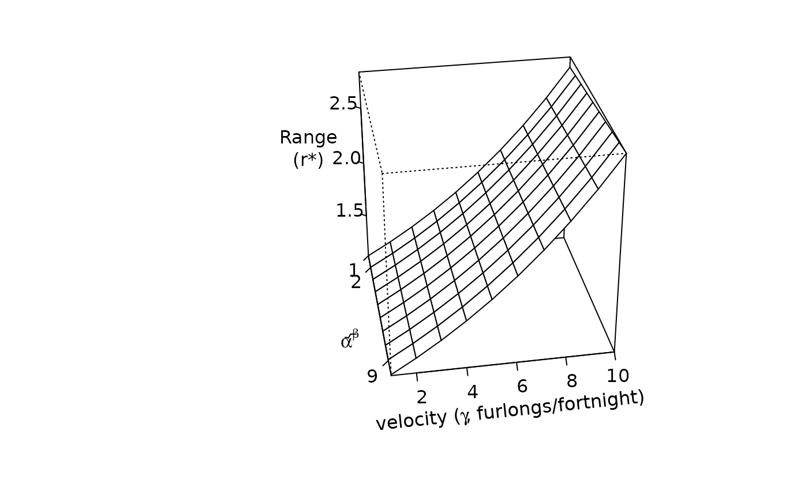

Display text in the margins of a 3D plot
paxis3d.RdDisplay text in the margins of a 3D plot.
Usage
paxis3d(edge,pmat,at=NULL,labels=TRUE,tick=TRUE,
pos=NULL,nticks=5,ticklen=0.05,labdist=0.15,xpd=NA,...)Arguments
- edge
which axis to calculate.
- pmat
matrix to transform coordinates.
- at
position on the axis.
- labels
labels to display in the margin.
- tick
whether to draw axis tick marks.
- pos
axis position relative to other axes.
- nticks
number of tick marks.
- ticklen
length of tick marks as a proportion of plot dimensions.
- labdist
distance of labels from axis.
- xpd
parameter to set plot clipping.
- ...
additional arguments passed to ptext3d.
Examples
x <- 1:10
y <- 1:10
z <- outer(x,y,function(x,y) { 3*sin(2*pi*x)/(2*pi*x)+exp(y/10)+(x*y)/1000 })
par(mar=c(5,10,2,2))
pp <- perspx(x,y,z,ticktype="detailed",phi=30,theta=80,nticks=3,r=10,
axes=FALSE)
## axis labels not drawn when axes=FALSE
paxis3d("X-",pp,at=c(1,2,9))
paxis3d("Y+",pp)
paxis3d("Z-",pp)
mtext3d("X-",pp,expression(alpha^sqrt(beta)))
## if you want labels parallel to axis, still have to figure out 'srt'
## by trial and error
mtext3d("Y+",pp,expression("velocity ("*gamma*", furlongs/fortnight)"),
xpd=NA,srt=6)
mtext3d("Z-",pp,"Range\n(r*)",dist=0.5)
